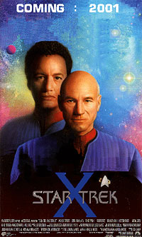
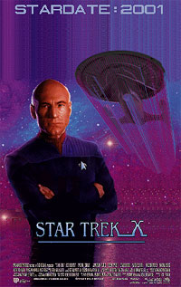
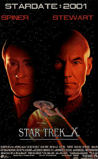

|
por Gustavo Leo
Voc
me conhece ou j ouviu falar coisas timas de mim: Gustavo Leo,
o algoz dos trekkies. Aquele que sabe tudo de Jornada nas
Estrelas, mas nada da vida (quisera eu isso ser verdade). O Paulo
Francis da sci-fi, como me apelidou o webmaster desse site. O
co-editor e colaborador de sites norte-americanos importantes e
famosos (oh, a fama!). O cara das fontes secretas na Paramount (ou
o cara que conhece o cara que conhece o cara que primo do cara
das fontes secretas na Paramount). O crtico arrogante e
filhinho-de-papai (bom, pelo menos eu tenho pai e me e eles esto
enxutos!). Freqentador do news Trek da UOL. O centro de polmicas
sem fim no fandom nacional (da qual no fao nem nunca fiz
parte, chamei o padre Karas e fiz um exorcismo, briguei e
critiquei muita gente, mas eles ainda no largam do meu p).
Polmicas
que vo da minha opinio sobre a falta de qualidade da dublagem
e traduo de Jornada nas Estrelas feita por trekkies na VTI-Rio
(que at melhorou com Voyager, sejamos justos), at a falta de
sites de qualidade brasileiros sobre a srie (que mudou com a
criao do Trek Brasilis e do Voyager Brasil, sejamos justos),
passando pelo fanatismo e pelas neuroses que abafam o
discernimento e personalidade de vrios trekkies nacionais (que,
sejamos justos, nunca vai mudar). Mas tudo isso j foi e ainda
ser criticado ad infinitum em fruns e listas trekkies por a
--ento por qu aqui de novo, no?
Por isso tudo e mais algumas razes, quando o Mr. Nogueira me
chamou pra colaborar com uma coluna para esse excelente site eu
decidi aceitar. Depois de meu aceitamento ser aceito pela cpula
do site (complicado, n?), decidi poupar a todos e no escrever
sobre nenhum desses assuntos (mas pera --foi isso que eu acabei
de fazer. Droga!) . Esse meu desdm e atitude j so lendrios
(levando trekkies a querer me processar ou fazer sites a meu
respeito, mais, ei, toda publicidade boa publicidade!), ento
vamos falar (ou criticar) outra coisa: o futuro nada promissor de
Jornada nas Estrelas nos cinemas e TVs americanas (apesar de nas
TVs brasileiras, a coisa estar at indo bem, no?).
 A
maior ameaa que enfrentar o futuro de Jornada nas Estrelas 10
e da nova srie de TV no so nem os Romulanos (que, dizem as ms
lnguas, faro parte do pico que ser o prximo filme de
cinema, um boato que acaba de ir pro brejo junto com a reputao
de Berman, a julgar pelas informaes e a repercusso da ltima
entrevista de Rick), nem Q e nem os Borgs, e nem mesmo os
produtores, que desejam que os trekkies no se lembrem de nada
sobre Kirk, Sulu ou qualquer coisa ligada srie original.
O verdadeiro inimigo algo muito mais real e perigoso: dinheiro.
Money. Bufunfa. Salrios pesados. Contratos complicados.
Politicagem de estdios e redes de TV. Egos de atores, produtores
e executivos, cada um com sua prpria agenda e querendo tirar o
maior proveito da situao. Ou seja, o maior obstculo para o
futuro da franquia de Jornada nas Estrelas o prprio sistema
hollywoodiano que a criou e nutriu pelos ltimos trinta anos.
Pelo menos a nutria at agora --ou at os executivos olharem o
faturamento do ltimo filme de Jornada nas Estrelas e a audincia
da srie Voyager em 1999.
Para aqueles que no entendem os mecanismos da indstria de
filmes, salrios pesados ou "above the line salaries"
referem-se ao custo do talento envolvido na produo de filmes e
televiso frente e atrs das cmeras. Por exemplo: Patrick
Stewart recebeu em Insurrection um salrio pesado de dezoito milhes
de dolares (dez milhoes de dlares above-the-line). Brent Spiner
recebeu, pelo mesmo filme, um salrio de dez milhes de dlares
(cinco milhes de dlares above-the-line) e s os advogados de
Rick Berman sabem ao certo quanto ele teria levado. Se Berman
recebeu mais que Spiner (e lgico que recebeu, astuto esse
Riquinho!), isso coloca quarenta milhes de dlares de um oramento
de setenta milhes na mo de apenas trs pessoas. Trs
pessoas. E voc ainda pergunta por qu a ILM ou mesmo a
Foundation no se envolveram nos efeitos de Insurrection, indo o
trabalho pra empresas de terceira categoria (e baratssimas) como
a Santa Barbara?
Insurrection no faturou mais de 80 milhes, no pagando o seu
prprio oramento. E se voc acha que Jornada nas Estrelas 10
vai ser mais barato que Insurrection, com melhores valores de
produo, entao voc tambm deve achar que Voyager "first
class drama" e que Patrick Stewart ama os trekkies e Jornada
nas Estrelas mais que o bonacho do Bill Shatner.
 Infelizmente
os faturamentos dos filmes de Jornada nas Estrelas, mesmo depois
que a bilheteria internacional e as vendas de homevideo so
somadas, sempre esto abaixo do esperado, nunca atingindo um nvel
desejado pelo estdio. Isso se reflete na televiso, onde a
atual srie de TV, mesmo usando de episdios com reviravoltas e
crossovers, tem obtido uma audincia cada vez menor.
Assim como o Imprio Klingon aps a exploso de Praxis, Jornada
nas Estrelas, na televiso e num cinema perto de voc, parece
ter apenas poucos anos a mais de vida. Como fazer um Jornada nas
Estrelas 10 pico e com grandes efeitos e produo e tudo mais
nessa situao? A resposta: no fazer, ou enganar que faz at
o ltimo instante (leia as verdades sobre Jornada 10 abaixo, se
tiver coragem e pecincia de chegar at l). Como fazer uma
nova srie, com ou sem Enterprise, nessa situao? E voc
ainda se pergunta por qu John Logan est trabalhando a mais de
8 meses no script de Jornada nas Estrelas 10 (um recorde, visto
que Brent Spiner est ajudando no script muito mais do que se
imagina - para o terror dos fs) e Brannon Braga est
trabalhando a mais de ano na premissa e no piloto da nova srie
(opa, isso sim um recorde!).
Isso no tem nada a ver com o fato de querer acertar a histria,
com o fato da srie ir pra CBS (we wish...) ou NBC (haha, essa
boa) ou o fato do agora contratado Stewart como sempre estar
metendo sua colher no roteiro do filme (ele fez isso com First
Contact e Insurrection, a ponto de Michael Piller jurar nunca mais
pisar na Paramount. Mesmo assim, os filmes no foram atrasados).
Tem a ver com uma certa confuso l nos corredores da Viacom,
uma confuso que nem o sistema de imprensa da Paramount (que
parece ser bem menos efetivo do que o da VTI-Rio) no est
conseguindo segurar. Esperem s at o anncio da 5 srie
sair em janeiro de 2001 (se sair) ou as filmagens de Jornada nas
Estrelas 10 comearem em maro de 2001 (se comearem) para o
mar de fofocas e confuses que vo pintar nos seus sites
preferidos (esse aqui includo).
Nem Kate Mulgrew (ver uma de suas ltimas entrevistas, onde
Janeway jogou muita coisa, incluindo Chakotay e Seven, no
ventilador) eles esto conseguindo controlar mais. E com essa
maneira de se lidar com atores, algum ainda se pergunta por qu
Leonard Nimoy jurou nunca mais respirar o mesmo ar que Berman, aps
o jeito que foi tratado por ele na pr-produo de Generations
(que Nimoy iria dirigir) e First Contact (que Nimoy iria servir
como consultor). A situao entre os atores da Srie Clssica
e Berman chegou a um ponto de conflito to grande em 1996 que Mr.
Nimoy foi o nico ator de Jornada alm de Patrick Stewart a no
participar da festa de gala de 30 anos do franchise, organizado
por (adivinhem) Berman (e at disponvel em vdeo nos EUA).
 A
resposta pra tanta mentira, discrdia, non-sequiturs e
politicagem uma s: medo. Medo dos executivos de cometerem um
erro que vai matar a galinha dos ovos de ouro. Medo de Berman e
Braga de perderem seus empregos. Medo do "the man" de
Jornada nas Estrelas, a toda poderosa e verdadeiro brao direito
de Berman, Merri Howard, de perder seu emprego de executiva. Medo
do inimigo de Jornada nas Estrelas que no vai atacar as naves
Enterprises que vem por a: o dinheiro, seja em bilheteria ou
dividendos pra UPN (onde a Srie V vai aterrissar, no importa o
quanto a CBS e a NBC blefem com os trekkies desavisados). Ou seja,
um futuro negro, no importa como voc olhe pra situao. Mas
tenha certeza de que por esse mesmo motivo (money), Jornada nas
Estrelas 10 sai ano que vem, nem que seja em 31 de dezembro:
afinal em 2001 comemoram-se os 35 anos da srie e a Paramount
sempre lanou um filme pra comemorar os aniversrios, por um
simples motivo: o merchandise vende mais. E quem quer lanar um
filme que no venda merchandise? (lembram-se de Batman &
Robin e Godzilla?) A prpria Playmates cancelou seu contrato com
a Paramount porque os brinquedos de Jornada nas Estrelas no
vendiam mais. Cruzes, que raio de karma, hein Berman?
E pra piorar a situao e o status de Mr. Berman, ele provou
numa entrevista dada revista Communicator e postada semana
passada com exclusividade no site TrekWeb.com que alm de ser
descendente do Baro de Mulchalssen, ficou totalmente senil. Aps
falar nos ltimos meses que Jornada 10 seria uma "saga pica
e dramtica" nos moldes de First Contact, Berman revelou que
na verdade o filme ser "uma aventura para cima, com muito
humor" e com "um novo vilo de uma nova raa aliengena"
(l se foram os romulanos, que talvez apaream s numa pontinha
"morta" como em Generations). Isso mesmo, Jornada 10 ser
um remake de Insurrection, o maior fracasso do franchise no
cinema.
Ou Berman no sabe aprender com seus erros ou ficou doidinho da
silva. E isso repercutiu de modo pssimo na mdia americana.
Steve Krutzler, editor do TrekWeb, disse em seu site ter ficado
extremamente decepcionado e pessimista a respeito do novo filme,
aps as novas declaraes de Berman. E Frank Kurtz, editor da
revista Cinescape, talvez a mais importante revista do gnero
sci-fi nos EUA, me disse por e-mail: "[...] o que Berman me
disse me preocupa tambm... no que eu v perder o sono, face
situao das eleies presidenciais."
E se Berman se porta assim com relao a Jornada 10, imagina
como no est a situao da Srie 5, um projeto muito mais
complicado na criao do que o novo filme.
J foi dito no frum do Trek Brasilis por um dessas dezenas de
trekkies nacionais que caram nas minhas garras que talvez eu
gostaria de ser um produtor da srie ou teria desejos enrustidos
de me aventurar a me envolver com Jornada nas Estrelas de verdade,
seja como jornalista ou escritor (duas coisas que, assim como um
trekkie, eu no sou tambm e nunca vou ser, obrigado --co-editor
de sites americanos apenas uma ego trip e um hobby divertido, no
um emprego). Seria azar demais estar no lugar desse povo --stress
pra poltico brasileiro no botar defeito. Por isso eu prefiro
ser o Gustavo Leo mesmo. Irnico, mas verdadeiro (pelo menos na
maioria das vezes). No tenho que me preocupar com Jornada nas
Estrelas ou os trekkies e nem com repercusses na Internet, s
com a vida real de mulher, chopp, trabalho, famlia (Lees andam
em bandos) e amigos. S assistir srie com uma boa companhia
(e no estou falando de pipoca) e de vez em quando. Com o senso
crtico ligado e o senso de importncia desligado. Mas minto,
com uma preocupao: rezando pra no jogar dinheiro fora no prximo
filme ou nos prximos episdios.
|